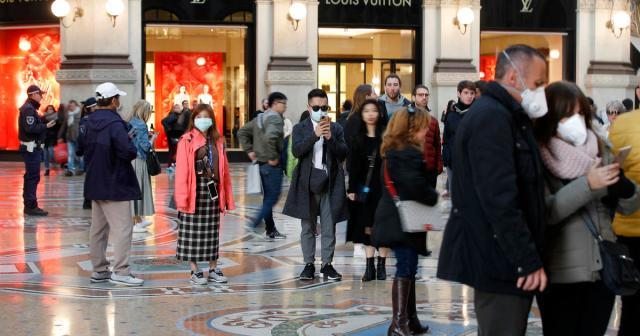

意大利疫情日记①上：防疫准备细致 极右还在瞎闹
原文链接 备份链接 体坛周报全媒体驻意大利记者 王勤伯 意大利新冠疫情突然爆发，不少同事、朋友和读者都对我表达了关心，这里就借体坛加APP的一个角落，和大家聊聊我正在经历的意大利疫情。 （1） 先聊一下对意大利卫生防疫系统和本次应对新冠的 …
体坛周报全媒体驻意大利记者 王勤伯
意大利新冠疫情突然爆发，不少同事、朋友和读者都对我表达了关心，这里就借体坛加APP的一个角落，和大家聊聊我正在经历的意大利疫情。
（3）
必须承认，疫情的发生始终有其偶然性，尤其是这种人类仍然了解不够充分的病毒，谁也不能保证今天平静如水的地区明天不变成重灾区。
现在就去总结谁是谁非，比较仓促，也可能留下笑柄。但有一些明显的错误或无事生非贻误战机，却是可以指出的。
首先简单谈下目前孔特律师担任总理的意大利政府。2019年下半年以来，是民粹党五星运动和中左派的民主党联合执政，曾和五星运动结盟的极右“联盟党”下野。
意大利并不是中央-大区-市政府的垂直体系，大区和市政府各司其职，大区在卫生、体育等公共事业方面扮演着重要的协调者角色。因此各个大区的医疗健保体系也有细微区别。例如全国健保给孕妇提供2次免费B超，托斯卡纳大区的孕妇是3次免费，多出的1次大区买单。
意大利政府做出断航决定以后，由于欧盟各国无法统一行动，因此也在机场等地增加体温检测等措施。

2月初，联盟党担任主席的4个大区突然对意大利卫生部发难，发起人是威内托大区主席扎亚，要求意大利卫生部宣布，从中国回来的学生，一律需要经过14天隔离才能入学。
当时，意大利的华人社团早已在使领馆协调下自行组织自愿隔离，同时华人社团和使领馆也非常主动和意大利有关方面就防止疫情扩散的问题进行沟通，从武汉撤回的意大利侨民则在罗马附近的军营隔离。在具体措施已经落到实处的情况下，孔特政府没有接受对特殊群体下强制命令的请求，这明摆着是联盟党设的套。
在宣传措辞上，扎亚有意把学生往“孩子”“儿童”身上引，表示为了保护下一代的健康，这是必须的。但了解新冠肺炎的人都知道，一旦提升防疫等级，就不能只针对小孩，而是不分职业、年龄、国籍的隔离措施。

威内托大区主席扎亚
这里顺带说一句，扎亚符合联盟党优秀党员的特征，张口就是谎话。几年前伦齐政府试图推动立法给在意大利出生长大的小孩国籍，排外的扎亚当然反对，但为了掩盖自己排外，他接受媒体采访时说，他已经和威内托当地很多外国人聊过了，这些外国人都说是否加入意大利国籍不是那么重要的事情。
扎亚当然也知道孔特政府会拒绝，然后联盟党领导人和网军就开始拿“意大利人”和“小孩”话题散布恐慌，说孔特政府没有能力保护意大利人，让有小孩的家长感到恐惧。意大利人是一个对小孩问题格外敏感的民族，围绕“政府是否应该下令让中国来的小孩隔离14天”这个问题，联盟党发动的舆论攻势持续了好几天。
心思用在搞政治，用隐秘、狡猾的手法制造恐慌、加深排外情绪，当然就不可能全心全力去为抗疫做出必要的准备，下面他的受众也会更倾向于认为新冠病毒=中国人，忽略任何国籍和肤色的人都可能被感染，都可能成为传播者。
上文说到的病人发热甚至已经住院好几天，成为超级传播者，感染医护人员，但之后才想起查新冠病毒，这里有患者自己缺乏防疫意识和知识的问题，有小医院心理准备不足的问题，也有大区布防不够的责任。
如果接下来在隆巴底、维内托等联盟党老巢地区发生华人遇袭事件（已经发生的个案就不重复介绍了），也不会让人感到惊讶。该做的排外情绪铺垫，联盟党的领导人一直在认真地做。
海内外华语世界有一些支持欧美极右的网军，喜欢把意大利萨尔维尼、法国勒庞这种排外主义人物赞扬为“务实的爱国主义者”，认为他们的排外主义只会针对穆斯林和黑人，会把听话不惹事的华人当盟友，现在也该好好被打脸了。
（4）
在自己管辖的维内托大区和临近的友军阵地隆巴底大区爆发疫情以后，扎亚苦于当地0号病人和中国人搭建不起关系，现在倒是停止了对孔特政府的攻击。
萨尔维尼只能对空发炮，说孔特政府如果无法保护意大利人民，就应该下台，“都超过100例啦，孔特辞职！”
作为坚定的反欧人士，萨尔维尼每逢任何危机都会宣扬意大利应封锁国界退出申根， 但现在多个传播源头都追溯不到中国人身上，他也没太多具体的论据可以使用，因为退出申根也阻止不了意大利本国人的流动，阻止不了意大利本国人成为传播者。

但作为反对派，必须总是有事可干。攻击孔特不太站得住脚，萨尔维尼就选择攻击左派执政、拥有华人城市普拉托的托斯卡纳大区，认为托斯卡纳大区主席罗西没有采取措施保护好意大利人，准备联名投诉罗西。
罗西的反应很干脆：第一，托斯卡纳大区比别的地方都做得更好，做得更多；第二，跑来质疑他的人，要么出于坏心，要么就是亲法西斯。
托斯卡纳大区肯定不会永远0案例，但要说具体的工作，最近一段时间还真是做到了少说话多做事，大区一直在和华人社团、中国驻佛罗伦萨领事馆合作，例如为1400名从国内回来的华侨进行自我隔离提供便利，也保持警戒，目前已经排除3例疑似。托斯卡纳大区医疗机构对传染病的反应能力和机制，之前我已经介绍过了，不再重复。
华人社团曾提出过希望租用一个建筑设施作为归意华侨临时隔离站，普拉托市政府和托斯卡纳大区拒绝了这个请求，因为建立这样的隔离点，反倒容易引发类似钻石公主号的大型疫情。
（5）
现在我们再来看一篇意大利极右人物发表的社论。《日报》(Il Giornale)主编、公开支持萨尔维尼和联盟党的右翼记者萨鲁斯蒂。这是一个多次因为造谣诽谤被起诉甚至被判过刑的谎话家。
萨鲁斯蒂其实找不出孔特政府现在有什么做得不对的地方，于是在2月22日，他写了一篇名为《薄弱一环》的社论，谴责左派拥抱华人的行为，认为在各方面的努力都已经强化的情况下，拥抱华人是意大利防疫的薄弱环节，结论是，“此类反对种族主义的行为，可能造成比种族主义更多的伤害。”
好吧，因为造谣诽谤被法庭定过罪的主编，大概也就只有这样的思想境界和社论水平了。我们还是继续剥皮来自联盟党的扎亚，看看把心思放在排外行为上，有多少自我伤害能力。

帕多瓦大学属于威内托大区，那里拥有一个在全欧洲都比较有名的生物制剂研发中心，针对新冠肺炎有较多无症状感染者的特点，他们在2月上旬即已研发出一种可以通过唾液在3小时内出结果的检测手段。推出这项检测，有利于防患于未然，让感染却未发病的人早点被发现。
当地华人侨团听到这个消息，立即表示欢迎，当时就有上百人表示愿意去接受测试。
然而，2月12日研发团队接到了威内托大区卫生主管曼陀安的回复，措辞严厉地表示，如果这项技术被用于检测无症状人士，将得不到任何公共经费支持。
现在疫情发生了，而且是已经散播开了，威内托大区不得不进行严密排查，并对所有接触者进行测试。帕多瓦大学这件事，当地反对派人士要求扎亚立即罢免曼陀安，扎亚没有回应。
（6）
顺带说一句，这两天不少朋友们发给我看的一系列意大利“排华浪潮”的照片和视频，有很大比例一眼就可以看出是假的。
生活在意大利，我很讨厌“联盟党”极右网军制造的各类煽动民族情绪的假消息。
对待自己朋友圈里的此类消息，我也是一样的态度。
今天就说到这里，未来几天有新内容，我们再慢慢聊。
原文链接 备份链接 体坛周报全媒体驻意大利记者 王勤伯 意大利新冠疫情突然爆发，不少同事、朋友和读者都对我表达了关心，这里就借体坛加APP的一个角落，和大家聊聊我正在经历的意大利疫情。 （1） 先聊一下对意大利卫生防疫系统和本次应对新冠的 …
原文链接 备份链接 由于确诊病例迅速攀升，意大利成为亚洲国家之外疫情最严重的国家。为了控制病毒的扩散，意大利政府从2月22日起在11个市镇采取了“封城”举措。在被封锁地区，只有持特别通行证者才能出入 2月23日，意大利米兰市中心的大教堂广 …
原文链接 备份链接 伦巴第大区。图片来源：天空新闻截图 记者：安晶 “ 虽然前三例病例出现在罗马，但疫情并没有在罗马爆发，而是发生在伦巴第大区。 ” 面对新型冠状病毒肺炎疫情的爆发，成为欧洲重灾区的意大利宣布北部11个市镇进入封城隔离，违 …
原文链接 备份链接 截至当地时间24日零时，意大利累计确诊157例新冠病毒肺炎感染病例，2人治愈出院，新增1例死亡病例，累计3例死亡病例。据欧联通讯社报道，死者是一位身患癌症的年长女性，确诊被感染新冠肺炎病毒后不治。 意大利紧急民防部部 …
原文链接 备份链接 图片来源：安莎通讯社 记者：潘金花 “ 意大利正出现德法已有的本地人传人感染群。随着伊朗病例的大幅增加，中东疫情也在逐步扩散。世卫组织担心新冠病毒在卫生系统薄弱的国家蔓延。 ” 随着新冠肺炎疫情在全球蔓延，本周，疫情正 …